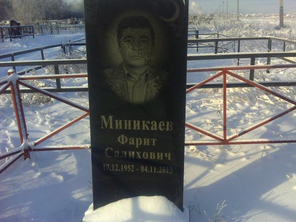
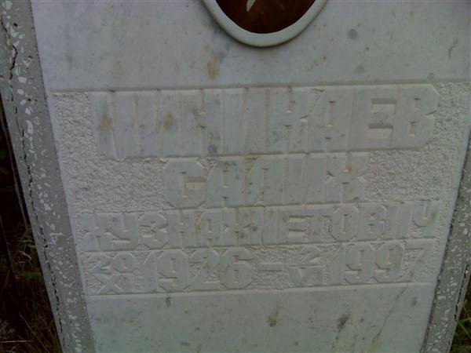
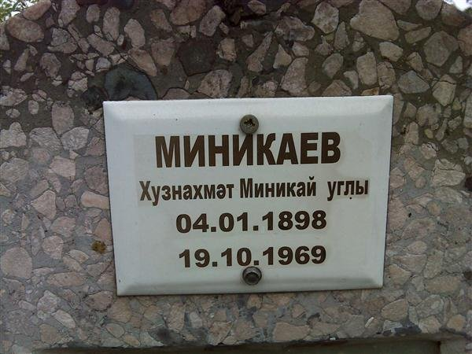
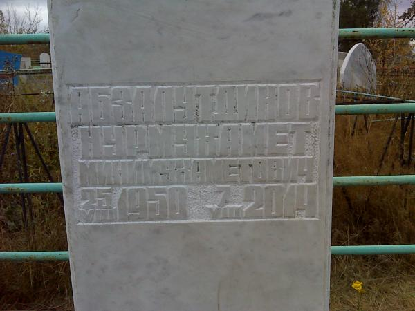
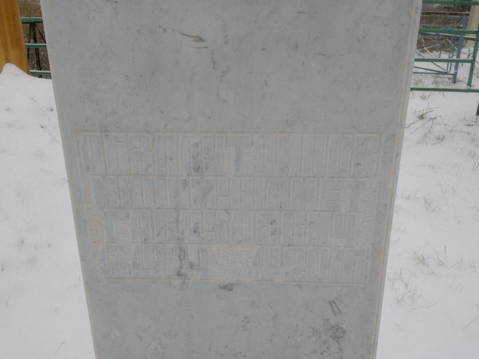
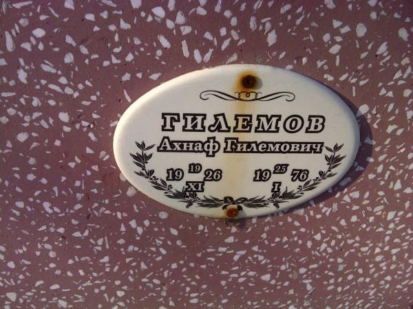
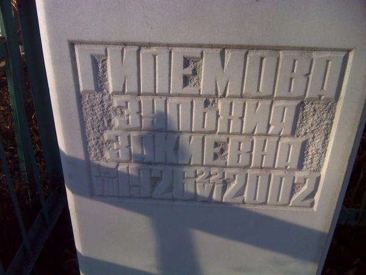

Главное
- Пробел в родословной закрыт. Между дедом Фаритом и прадедом Хузнахметом стоял ещё один человек — прадед Салих Хузнахметович (20.11.1926 — 02.06.1997). Теперь прямая линия непрерывна: Миникай → Хузнахмет (1898–1969) → Салих (1926–1997) → Фарит (1952–2013) → Альберт (1980) → Артур (2002). Прежняя семейная дата «1868» оказалась ошибкой: Хузнахмет родился 4 января 1898 г. [1]
- Надгробия подтвердили даты. Семь снимков с Ново-Северного и Левобережного кладбищ Магнитогорска: у шести человек надписи совпали с семейным рассказом, и даты Фарита, Салиха, Нурмухамета, Зульхии и Ахнафа теперь подкреплены второй цепочкой. На камне Салиха отчество — «Хузиахметович», как в индексе МВД РТ. Смотреть надгробия
- Уточнения сняли три вопроса. Родословная — линия Артура, а не супруги; Зульхия Закиевна — мать Рамзии; имя прадеда — Салих («Салик» было опечаткой). После исправления запись индекса «Салих Хузиахметович (1926)» совпала с прадедом по имени, отчеству, году, деревне и сценарию ссылки. [1] [19]
- Материнская линия получила полные имена. Нурмухамет Минимухаметович Абзалутдинов (1950–2014), его отец Минимухамет Габдулович (1924–2016) — водитель автобазы №1 треста «Магнитострой», и пара прадедов Ахнаф Гилемович (1926–1976) и Зульхия Закиевна (1926–2002) — родители бабушки Рамзии. [1]
- Семейный рассказ впервые сошёлся с архивом. В базе ОГАЧО «Награды Родины» нашлись обе награды прадеда: медаль «За трудовое отличие» 25.05.1953 (трест «Магнитострой») и медаль «Ветеран труда» 12.01.1987 (автобаза №1). Там же — медаль материнства Зульхии Закиевны (18.12.1965). [3] [4] [5]
- Ссылка из Татарстана подкреплена с двух сторон. В индексе МВД Республики Татарстан по селу Фомкино видны два дела: № 15358 — Хузиахмет (1893) и его сын Салих (1926), высланные 12.07.1931 в Челябинскую область, и № 15376 — большая семья Гаяза (1908) и Хузахамета (1903), включая детей, родившихся уже на спецпоселении. Наша линия совпадает с первым делом по двум поколениям; нерешённым остаётся только год рождения главы (1898 в семье, 1893 в индексе). [15] [16] [8]
- Что осталось выяснить. Дело № 15358 в ИЦ УВД Челябинской области — документ, который назовёт Фарита сыном Салиха; метрические книги мечети Фомкино за 1898 и 1926 гг.; записи о рождении и смерти в ЗАГС Магнитогорска; наградные документы в ОГАЧО.
Как читать метки надёжности
Кто есть кто
| Поколение | Имя | Даты | Роль и основание |
|---|---|---|---|
| прапрапра | Миникай | — | отец Хузнахмета по патрониму «Миникай углы»; вероятно |
| прапрапра | Гилем, Заки, Габдул | — | отцы Ахнафа, Зульхии и Минимухамета по отчествам; вероятно |
| прапра | Миникаев Хузнахмет Миникаевич | 04.01.1898 — 19.10.1969 | прапрадед по отцу; по сведениям семьи |
| прапра | Абзалутдинов Минимухамет Габдулович | 13.07.1924 — 18.04.2016 | прадед по матери, водитель автобазы №1; подтверждено наградой |
| прапра | Гилемов Ахнаф Гилемович | 19.11.1926 — 25.01.1976 | прадед по матери, отец Рамзии; по сведениям семьи |
| прапра | Гилемова Зульхия Закиевна | 15.08.1926 — 22.06.2002 | прабабушка по матери; медаль материнства 1965; подтверждено |
| пра | Миникаев Салих Хузнахметович | 20.11.1926 — 02.06.1997 | прадед по отцу; по сведениям семьи |
| пра | Абзалутдинов Нурмухамет Минимухаметович | 25.08.1950 — 07.08.2014 | дед по матери; по сведениям семьи |
| пра | Абзалутдинова Рамзия Ахнафовна | р. 17.02.1953 | бабушка по матери, работала на ММК; по сведениям семьи |
| деды | Миникаев Фарит Салихович | 17.12.1952 — 04.11.2013 | дед по отцу, сварщик «Магнитостроя»; по сведениям семьи |
| деды | Миникаева Марзия Махмутовна | р. 21.10.1954 | бабушка по отцу, бухгалтер; по сведениям семьи |
| родители | Миникаев Альберт Фаритович | 08.07.1980 | отец; по сведениям семьи |
| родители | Миникаева Альфия Нурмухаметовна | 28.02.1980 | мать; девичья фамилия, вероятно, Абзалутдинова; по сведениям семьи |
| субъект | Миникаев Артур Альбертович | 21.06.2002 | субъект исследования; по сведениям семьи |
| супруга | Миникаева (Рябова) Милана Константиновна | 10.09.2002 | супруга, брак 20.08.2026; по сведениям семьи |
В деле также ведутся: Салих Хузиахметович (1926) и Хузиахмет (1893) из индекса МВД РТ — записи, совпадающие с Салихом и Хузнахметом (тождество не сведено в одно лицо до получения дела № 15358); Равид Салихович Миникаев (орден 1974) — возможный брат Фарита; Салих Миникаев (1913, Нижние Шуни) — другая семья; Константин — отец супруги по отчеству.
Линия отца: Миникаевы
Фамилия происходит от личного имени Миникай: прапрадед записан в семье как «Миникаев Хузнахмет Миникай углы», то есть «Хузнахмет, сын Миникая». Год его рождения семья называла по-разному: в первом сообщении — 1868, в шестом — 4 января 1898. Вторая дата согласуется с биографией сына: Салих родился в 1926 г., когда отцу было 28 лет, а Фарит — в 1952 г., когда Салиху было 26. С датой 1868 в этой цепочке не хватало целого поколения — теперь оно найдено.
Салих Хузнахметович — звено, которого раньше не было в деле. В базе наград ОГАЧО его нет, а в индексе МВД РТ он записан как «Миникаев Салих Хузиахметович, 1926» — в том же деле № 15358, что и его отец. После уточнения имени совпали все признаки: год, отчество в другом написании, деревня Фомкино и сценарий ссылки, который помнит семья. Документ, называющий Фарита его сыном, ещё не найден, поэтому тождество подкреплено, но не доказано окончательно.
Дед Фарит Салихович работал сварщиком в тресте «Магнитострой» — это семейное сведение, документа пока нет. Документы по личному составу треста за 1936–1992 гг. хранятся в МКУ «Городской архив г. Магнитогорска», фонд Р-142; для поиска нужен хотя бы примерный период работы. В базе наград ОГАЧО записей на Фарита нет, зато есть Равид Салихович Миникаев — орден Трудового Красного Знамени 19.02.1974, Магнитогорский метизно-металлургический завод. Отчество совпадает с Салихом, поэтому Равид — возможный брат деда; наградной лист 1974 г. назовёт его год и место рождения.
Линия матери: Абзалутдиновы и Гилемовы
Прадед Минимухамет Габдулович Абзалутдинов — самый документированный человек в деле. Семья помнила, что он водитель автобазы №1 треста «Магнитострой», награждён медалью «За трудовое отличие» в 1953 г. и имеет звание ветерана труда с 1987 г. Архивная база ОГАЧО подтверждает и то, и другое: запись 25.05.1953 (трест «Магнитострой», фамилия написана «Абзамутдинов») и запись 12.01.1987 (автобаза №1 автотранспортного предприятия треста «Магнитострой», Правобережный район). Это первое место, где семейный рассказ и архивный источник совпали независимо друг от друга.
Прабабушка Зульхия Закиевна Гилемова (1926–2002) в базе ОГАЧО записана дважды: 18.12.1965 — медаль «Медаль материнства», 1977 — медаль «Ветеран труда» с местом работы «Городской комбинат ресторанов и кафе» и написанием «Зульхис Зокиевна». Медаль материнства косвенно говорит о большой семье: у Рамзии были братья и сёстры, но их имена пока не установлены.
Её муж, прадед Ахнаф Гилемович Гилемов (1926–1976), в базу наград не попал. Связь «Зульхия — мать Рамзии» — вывод по фамилии (Гилемова) и по паре «прадед — прабабушка»; в сообщении прямая фраза «мать Рамзии» не произнесена. Это отмечено как вероятное.
Фомкино: что известно о ссылке
Семейное предание говорит, что прадедов и прабабушек сослали в Магнитогорск из Татарстана. В индексе МВД Республики Татарстан («Открытый список») по фамилии Миникаев — 43 формуляра; по селу Фомкино Октябрьского района они распадаются на два дела:
| Дело | Кто проходит | Что известно |
|---|---|---|
| № 15358 | Хузиахмет (1893) и Салих Хузиахметович (1926) | «Кулак», решение Октябрьского РИК 12.07.1931, высылка в Челябинскую обл., реабилитация 10.08.1993. Состав семьи в индексе не раскрыт. [15] [16] |
| № 15376 | Гаяз (1908), Хузахамет (1903), Минсалих (1926), Салима (1928), Нафиса (1915), Амир Гаязович (1946), Зуфер Гаязович (1943), Насима Гаязовна (1940) | Высылка 1931 г., реабилитация 19.06.1995. Дети 1940-х годов родились уже на спецпоселении. [9] [10] [11] [12] [13] [14] |
| № 15734 | Акдас Мингазеевич (1927), с. Кук-Тяка | Другая деревня и другое дело — к нашей линии не относится; исключён из разработки. |
Наша линия лучше всего совпадает с делом № 15358: отец 1890-х годов рождения и сын 1926 года. Расхождение одно — год главы (1898 в семье против 1893 в индексе), и оно объяснимо: по соседнему делу тот же человек мог быть записан и 1903 годом. Решает дело: в нём указаны отчество главы и состав семьи. Запрос дела — главный следующий шаг исследования.
Что даёт база «Спецпереселенцы» ОГАЧО. В Магнитогорске и Магнитогорском районе значатся 11 Миникаевых: Мингаз (1883) с семьёй в посёлке Ново-Северный (Магсут 1916, Халида 1897, Фахры 1913, Наиля 1919, Лальминура 1921, Саида 1924, Акдес 1927, Апас 1931), а также Гаус и [Набира] в посёлке Ново-Туковый. Это подтверждает сам факт расселения Миникаевых в Магнитогорске как спецпоселенцев, но наших Хузнахмета и Салиха в базе нет. Семья Мингаза происходит из села Кук-Тяка Азнакаевского района (дело № 15734) — это отдельный клан, не наша линия. [20]
Контекст ссылки описан в интервью историка Салавата Ахметзянова: в 1930–1933 гг. около трети раскулаченных Татарстана направляли в Магнитогорск, и это объясняет, почему татарская семья оказалась именно там. Это фон, а не сведение о конкретной семье. [18] Село Фомкино — старое татарское село с двумя мечетями и медресе с 1908 г.; до 1920 г. оно относилось к Старо-Максимкинской волости Чистопольского уезда Казанской губернии. [17]
Архивные находки: записи о наградах
База «Награды Родины» составлена Государственным учреждением «Объединённый государственный архив Челябинской области» по документам о награждении: решениям облисполкома, актам вручения и спискам награждённых. Поиск в ней идёт через параметр WorkerFilter[name1] — именно поэтому прежняя попытка с другим параметром возвращала всю базу.
| Кто | Дата | Награда | Место работы и район |
|---|---|---|---|
| Абзамутдинов Минимухамет Габдулович | 25.05.1953 | Медаль «За трудовое отличие» | Строительно-монтажный трест «Магнитострой», г. Магнитогорск |
| Абзалутдинов Минимухамет Габдулович | 12.01.1987 | Медаль «Ветеран труда» | Автобаза №1 автотранспортного предприятия треста «Магнитострой», Правобережный р-н |
| Гилемова Зульхия Закиевна | 18.12.1965 | Медаль «Медаль материнства» | г. Магнитогорск, Левобережный р-н |
| Гилемова Зульхис Зокиевна | 22.02.1977 | Медаль «Ветеран труда» | Городской комбинат ресторанов и кафе, Ленинский р-н |
| Миникаев Равид Салихович | 19.02.1974 | Орден Трудового Красного Знамени | Магнитогорский метизно-металлургический завод |
Записи 1953 и 1987 гг. относятся к одному человеку, несмотря на разное написание фамилии: совпадают имя, отчество, город и место работы — трест «Магнитострой». Записи 1965 и 1977 гг. — вероятно, одна и та же женщина (Зульхия/Зульхис, Закиевна/Зокиевна). Запись о Равиде Салиховиче к прямой линии не привязана.
В той же базе есть и другие Абзалутдиновы Магнитогорска: Мухамед Габдулович (Челябинск, 1989, «Ветеран труда») — возможный брат прадеда, Галима Мужавировна (1983) и Галия Абдуловна (1990). Они требуют отдельной проверки и в древо не включены.
Надгробия: семь снимков с двух кладбищ
Фотографии переданы 7 ноября 2026 г. вместе с указанием кладбищ. Надписи сверены с реестрами: у шести человек даты совпали с семейным рассказом, и эти утверждения переведены в статус «подтверждено» двумя цепочками. Надпись Минимухамета Габдуловича не читается — она выветрена, и даже усиление контраста не помогает.

«Миникаев / Фарит / Салихович / 17.12.1952 – 04.11.2013»Левобережное кладбище. Чёрный гранит, портрет и полумесяц.

«МИНИКАЕВ / САЛИХ / ХУЗИАХМЕТОВИЧ / 20 11 1926 – 2 6 1997»Ново-Северное кладбище. Отчество на камне — как в индексе МВД РТ.

«МИНИКАЕВ / Хузнахмәт Миникай углы / 04.01.1898 / 19.10.1969»Ново-Северное кладбище. Татарская форма патронима.

«АБЗАЛУТДИНОВ / НУРМУХАМЕТ / МИНИМУХАМЕТОВИЧ / 25.8.1950 – 7.8.2014»Левобережное кладбище.

[неразборчиво]: четыре строки рельефного текста, выветреныЛевобережное кладбище. Нужен крупный план при рассеянном свете.

«ГИЛЕМОВ / Ахнаф Гилемович / 19 XI 26 – 25 I 76»Левобережное кладбище. Римские цифры месяцев.

«ГИЛЕМОВА / ЗУЛЬХИЯ / ЗАКИЕВНА / 15.8.1926 – 22.6.2002»Левобережное кладбище.
Надгробие — поздний мемориальный источник: надпись высекали после смерти, и она могла опираться на те же семейные сведения, что и рассказ. Поэтому совпадение дат усиливает версию, но не заменяет запись ЗАГС. Именно так оно и размечено в реестрах: даты Фарита, Салиха, Нурмухамета, Зульхии и Ахнафа — «подтверждено», дата Хузнахмета — по-прежнему спорная из-за индекса (1893), а Минимухамет — только по семье.
Родственные связи
| Связь | Основание | Статус |
|---|---|---|
| P-0002 → P-0001 (мать — сын) | Прямое указание субъекта, [2] | по сведениям семьи |
| P-0003 → P-0001 (отец — сын) | Прямое указание субъекта, [2] | по сведениям семьи |
| P-0007 → P-0002 (мать — дочь) | «Мама мамы Рамзия Ахнафовна», [2] | по сведениям семьи |
| P-0009 → P-0003 (мать — сын) | «Мама отца Марзия Махмутовна», [2] | по сведениям семьи |
| P-0004 → P-0003 (отец — сын) | Фарит Салихович назван дедом по отцу, [1] | по сведениям семьи |
| P-0005 → P-0002 (отец — дочь) | Нурмухамет Минимухаметович назван дедом по матери, [1] | по сведениям семьи |
| P-0008 → P-0007 (отец — дочь) | Ахнаф Гилемович назван прадедом по матери, [1] | по сведениям семьи |
| P-0016 → P-0004 (отец — сын) | Салих Хузнахметович — прадед, [1] | по сведениям семьи |
| P-0010 → P-0016 (отец — сын) | Хузнахмет — прапрадед; отчество Салиха, [1] | по сведениям семьи |
| P-0017 → P-0005 (отец — сын) | Минимухамет Габдулович — прадед, [1] | по сведениям семьи |
| P-0018 → P-0007 (мать — дочь) | «Зульхия — мама Рамзии», [19] | по сведениям семьи |
| P-0008 ⚭ P-0018 (брак, вероятно) | Пара родителей Рамзии, но брак прямо не назван | вероятно |
| P-0011 → P-0010 (отец — сын) | Патроним «Миникай углы», [1] | вероятно |
| P-0019 → P-0008, P-0020 → P-0018, P-0021 → P-0017 | Отчества Гилемович, Закиевна, Габдулович | вероятно |
| P-0004 ⚭ P-0009, P-0005 ⚭ P-0007 | Названы родителями, запись о браке не найдена | вероятно |
| P-0013 ≡ P-0016 (Салих 1926 = Салих 1926) | Имя, отчество, год, деревня и ссылка; две независимые цепочки, [16] [19] | подтверждено |
| P-0012 ≡ P-0010 (Хузиахмет 1893 = Хузнахмет 1898) | Тождество следует из тождества сына; год расходится на 5 лет | подтверждено |
| P-0022 — P-0004 (брат — брат, возможно) | Только отчество «Салихович» и город | вероятно |
| P-0001 ⚭ P-0014 (брак 20.08.2026) | Сообщил участник брака, [2] | по сведениям семьи |
| P-0015 → P-0014 (отец — дочь) | Только отчество «Константиновна» | вероятно |
Хронология
| Дата | Событие |
|---|---|
| 04.01.1898 | рождение Хузнахмета в Фомкино (по семье; в индексе — 1893) |
| 13.07.1924 | рождение Минимухамета Габдуловича |
| 19.11.1926 | рождение Ахнафа Гилемовича |
| 15.08.1926 | рождение Зульхии Закиевны |
| 20.11.1926 | рождение Салиха Хузнахметовича |
| 12.07.1931 | решение о высылке семьи Хузиахмета из Фомкино в Челябинскую область |
| 1931 | высылка семьи Гаяза и Хузахамета (дело № 15376) |
| 1 февраля 1947 | медаль «За доблестный труд в ВОВ» у Миникаева Гояса, Магнитострой (возможный родственник) |
| 25.05.1953 | медаль «За трудовое отличие» Минимухамета Габдуловича |
| 17.02.1953 | рождение Рамзии Ахнафовны |
| 25.08.1950 | рождение Нурмухамета Минимухаметовича |
| 17.12.1952 | рождение Фарита Салиховича |
| 21.10.1954 | рождение Марзии Махмутовны |
| 18.12.1965 | медаль материнства Зульхии Закиевны |
| 19.10.1969 | смерть Хузнахмета |
| 19.02.1974 | орден Трудового Красного Знамени у Равида Салиховича Миникаева |
| 25.01.1976 | смерть Ахнафа Гилемовича |
| 22.02.1977 | «Ветеран труда» Зульхии (Зульхис) Закиевны |
| 28.02.1980 | рождение Альфии Нурмухаметовны |
| 08.07.1980 | рождение Альберта Фаритовича |
| 12.01.1987 | «Ветеран труда» Минимухамета Габдуловича |
| 02.06.1997 | смерть Салиха Хузнахметовича |
| 21.06.2002 | рождение Артура Альбертовича |
| 10.09.2002 | рождение Миланы Константиновны |
| 22.06.2002 | смерть Зульхии Закиевны |
| 04.11.2013 | смерть Фарита Салиховича |
| 07.08.2014 | смерть Нурмухамета Минимухаметовича |
| 18.04.2016 | смерть Минимухамета Габдуловича |
| 20.08.2026 | брак Артура и Миланы |
Нестыковки и открытые вопросы
- Год рождения Хузнахмета. Семья называет 4 января 1898 г., индекс — 1893, соседнее дело — 1903. Три даты для одного имени означают, что годы в индексе условны. Тождество лиц при этом подтверждено со стороны сына; нерешённой остаётся дата. Различит метрическая книга Фомкино.
- Браки не документированы. Фарит и Марзия, Нурмухамет и Рамзия названы родителями, но записей о браке нет; в древе они показаны как родительские пары. Так же и с Ахнафом и Зульхией: материнство Зульхии подтверждено, брак — нет.
- Нет документа, связывающего индекс и семью. Тождество Салиха и Хузнахмета с записями дела № 15358 подкреплено совпадением признаков и семейным свидетельством, но ни одна бумага пока не называет Фарита сыном Салиха. Это даст само дело.
- Фамилия прадеда в записи 1953 года — «Абзамутдинов», в записи 1987 года — «Абзалутдинов». Считаем это опиской, а не другим человеком: совпадают имя, отчество, город и место работы.
Снятые вопросы
- «Салик» или «Салих». Решено: «Салик» — опечатка, имя прадеда Салих. Это совпало с написанием в индексе и подняло статус тождества до «подтверждено» двумя независимыми цепочками.
- Кем Зульхия приходится Рамзии. Решено: мать.
- Чья это родословная. Решено: линия Артура, а не супруги.
Где искали и чего не нашли
| Источник | Результат | Ограничение |
|---|---|---|
| ОГАЧО, «Награды Родины» | награды прадеда и прабабушки; Равид Салихович | индекс, не подлинники; охват 1943–1995 гг. |
| «Открытый список» (МВД РТ) | дела 15358 и 15376 по Фомкино | состав семьи в индексе не раскрыт |
| ОГАЧО, «Спецпереселенцы» | 11 Миникаевых в Магнитогорске; наших Хузнахмета и Салиха нет | база неполна; отсутствие записи ничего не доказывает |
| ОГАЧО по Хузнахмету, Салиху, Фариту | записей нет | база неполна; отсутствие записи ничего не доказывает |
| «Память народа» | доступ закрыт проверкой «не робот» | нужен браузер пользователя |
| timenote.info | соединение сбрасывается | маршрут не закрыт |
| «Бессмертный полк» | выдача подгружается скриптом | нужен браузер |
| ЦГА РТ, метрические книги Фомкино | не проверялись | нужен архивный запрос |
Что можно сделать дальше
- Дело № 15358 в ИЦ УВД Челябинской области (копия — ЦГА РТ): состав семьи, отчество главы, место поселения. Решает вопрос о тождестве с Фомкино.
- Дело № 15376 — семья Гаяза и Хузахамета: есть ли в нём связь с нашей линией.
- Метрические книги мечети с. Фомкино (ЦГА РТ): рождение Хузнахмета (1898) и Салиха (1926), браки и смерти рода.
- ЗАГС Магнитогорска: рождения 1926, 1950, 1952, 1953, 1980 гг.; смерти 1969, 1997, 2013, 2014, 2016 гг.; записи о браках родителей.
- ОГАЧО: наградные документы Минимухамета Габдуловича и Зульхии Закиевны, наградной лист Равида Салиховича.
- Городской архив Магнитогорска, фонд Р-142: личное дело сварщика Фарита Миникаева и личная карточка водителя автобазы №1.
- Военные документы: проверить, участвовали ли в войне Абзалутдинов М. Г. (1924) и Гилемов А. Г. (1926).
- Вопросы семье: что помнит бабушка Марзия о ссылке; сохранились ли фотографии, наградные удостоверения и документы; знает ли кто-нибудь о братьях и сёстрах Салиха.
Источники
- Шестое сообщение субъекта, 7 ноября 2026 г. Полные имена, даты и места пяти поколений; супруга. Запись в деле:
input/interview-2026-11-07-6.md(A-0017). - Предыдущие сообщения субъекта, 6 ноября 2026 г. Родители, бабушки, предание о ссылке, работа деда, брак и супруга. Записи:
input/interview-2026-11-06*.md(A-0001, A-0006, A-0007, A-0013, A-0016). - База ОГАЧО «Награды Родины»: Абзалутдинов Минимухамет Габдулович, 12.01.1987. Медаль «Ветеран труда», автобаза №1 треста «Магнитострой». dbases.archive74.ru (A-0018).
- База ОГАЧО: «Абзамутдинов» Минимухамет Габдулович, 25.05.1953. Медаль «За трудовое отличие», трест «Магнитострой». dbases.archive74.ru (A-0019).
- База ОГАЧО: Гилемова Зульхия Закиевна, 18.12.1965. Медаль «Медаль материнства». dbases.archive74.ru (A-0020).
- База ОГАЧО: Гилемова Зульхис Зокиевна, 22.02.1977. Медаль «Ветеран труда», комбинат ресторанов и кафе (A-0021).
- База ОГАЧО: Миникаев Равид Салихович, 19.02.1974. Орден Трудового Красного Знамени, метизно-металлургический завод (A-0022).
- «Открытый список»: поиск по фамилии Миникаев. 43 формуляра, кластер Фомкино. ru.openlist.wiki (A-0023).
- «Открытый список»: Миникаев Гаяз (1908). Кулак, высылка 1931, дело № 15376, реабилитация 19.06.1995. ru.openlist.wiki (A-0024).
- «Открытый список»: Миникаев Минсалих (1926). Дело № 15376. ru.openlist.wiki (A-0025).
- «Открытый список»: Миникаев Хузахамет (1903). Дело № 15376. ru.openlist.wiki (A-0026).
- «Открытый список»: Миникаева Нафиса (1915). Вариант ФИО «Юнусова Нафиса», дело № 15376 (A-0027).
- «Открытый список»: Миникаева Салима (1928). Дело № 15376 (A-0028).
- «Открытый список»: Амир Гаязович (1946), Зуфер Гаязович (1943), Насима Гаязовна (1940). Родились на спецпоселении, дело № 15376 (A-0029).
- «Открытый список»: Миникаев Хузиахмет (1893). Кулак, высылка 12.07.1931, дело № 15358, реабилитация 10.08.1993. ru.openlist.wiki (A-0008).
- «Открытый список»: Миникаев Салих Хузиахметович (1926). То же дело № 15358. ru.openlist.wiki (A-0009).
- Татарская энциклопедия: село Фомкино. Юрисдикция, мечети, население. tatarica.org (A-0011).
- «Реальное время»: интервью С. Ахметзянова о раскулаченных татарах на Магнитке. Исторический контекст. realnoevremya.ru (A-0010).
- Седьмое сообщение субъекта: уточнения, 7 ноября 2026 г. Родословная относится к линии Артура; Зульхия — мать Рамзии; «Салик» — опечатка, имя Салих; документов пока нет. Запись в деле:
input/interview-2026-11-07-7.md(A-0031). - База ОГАЧО «Спецпереселенцы»: Миникаевы в Магнитогорске. 11 записей: Мингаз (1883) с семьёй в пос. Ново-Северный, Гаус и [Набира] в пос. Ново-Туковый. dbases.archive74.ru (A-0032).
Приватность и ограничения
Живые лица в деле: Артур, Альфия, Альберт, Марзия, Рамзия и Милана. О них собраны только имя, дата и место рождения и занятие; адреса, телефоны и документы-идентификаторы не собирались. О супруге известны имя, дата и место рождения, девичья фамилия и дата брака; открытый поиск по ней не проводился. Сведения о репрессиях приводятся по индексу и сформулированы нейтрально. Конфессия не утверждается: мечеть Фомкино — вероятное место записей, а не установленный факт.
Реестры дела: person-register.csv, claims-register.csv, relationship-register.csv, artifact-register.csv, search-log.csv, research-state.md. Древо для обмена: gen-tree.ged (GEDCOM 5.5.1, 18 персон, 13 семей).